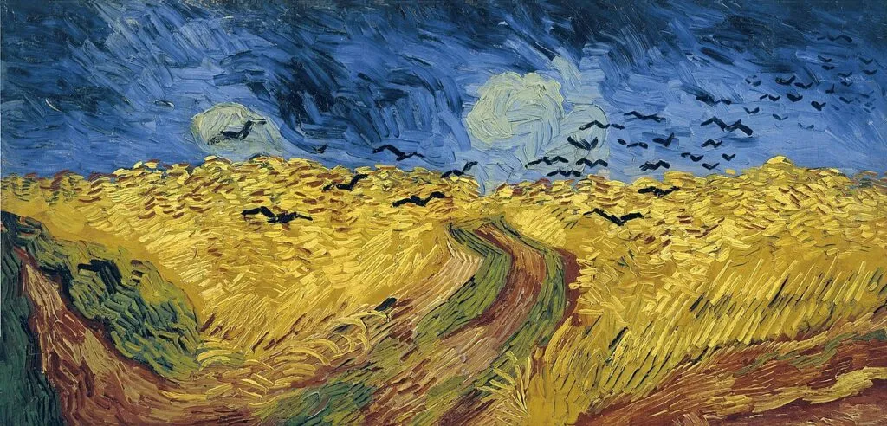
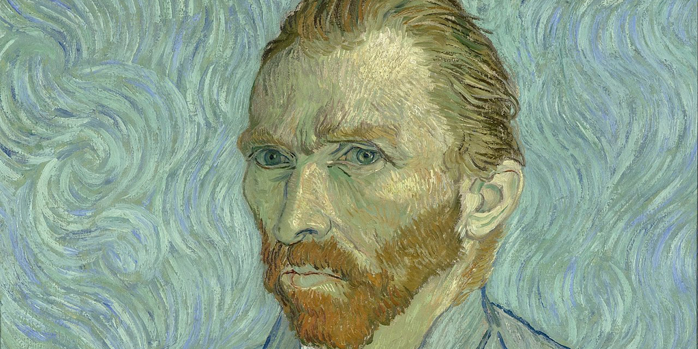
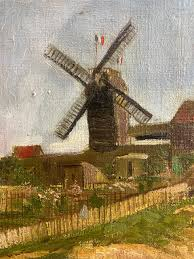
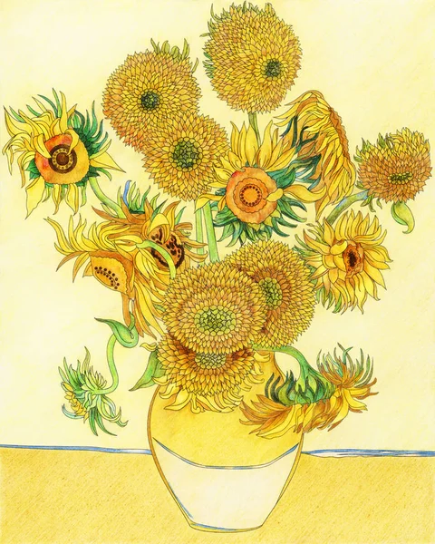
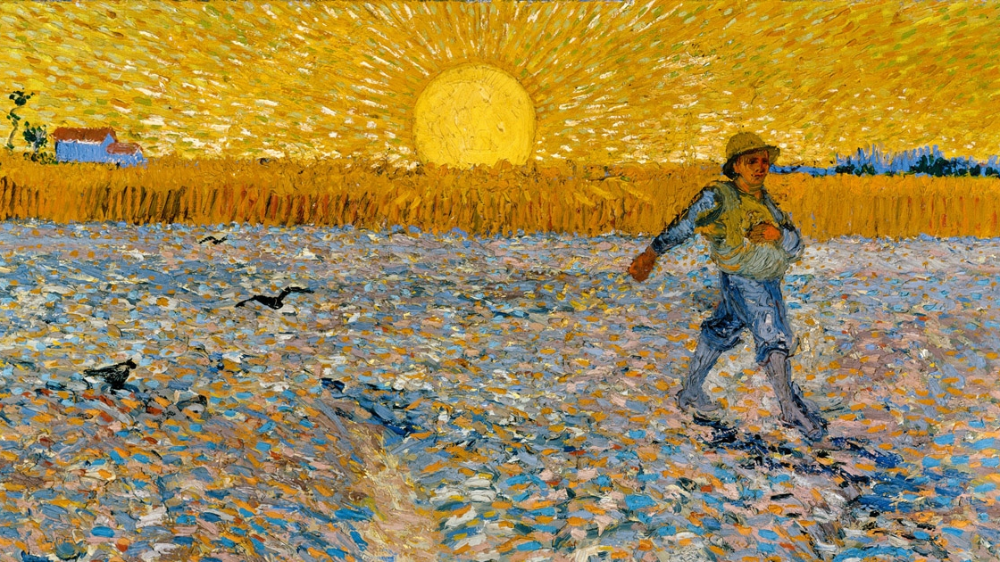
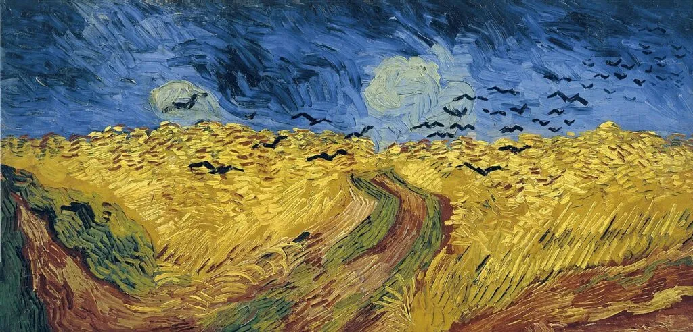
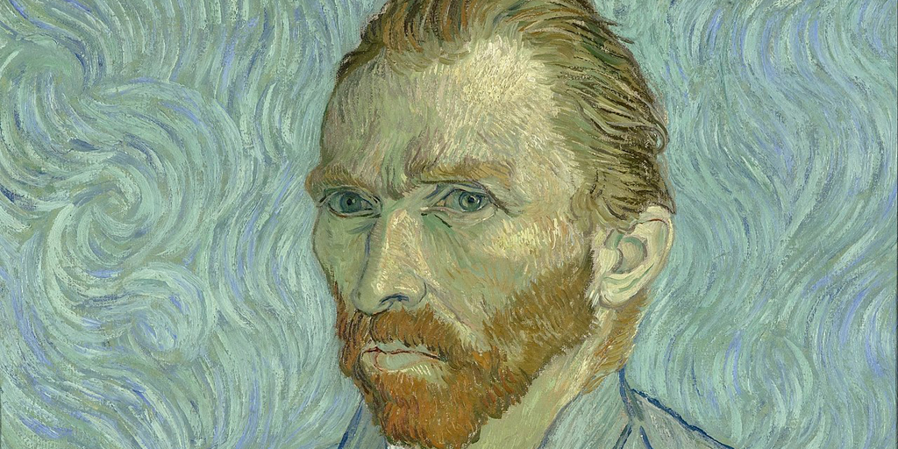
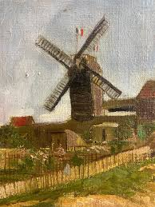
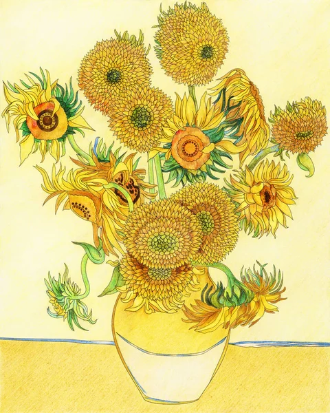
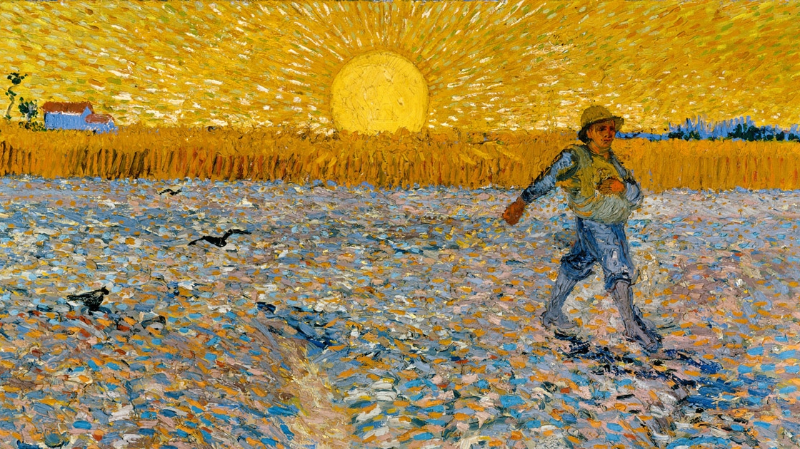

Torna alla home page
Vincent Van Gogh
Vincent van Gogh è uno dei pittori più celebri e influenti della storia dell'arte. Nato nei Paesi Bassi nel 1853, van Gogh ha prodotto un corpus di opere straordinario durante la sua breve vita. La sua arte è caratterizzata da pennellate audaci, colori vivaci e una profonda espressione emotiva. Van Gogh ha dipinto una vasta gamma di soggetti, tra cui paesaggi, nature morte, ritratti e autoritratti. Uno dei suoi periodi più noti è quello trascorso ad Arles, in Francia, dove ha dipinto alcune delle sue opere più iconiche, tra cui "Notte stellata" e "Il campo di grano con i corvi". Van Gogh lottava con problemi mentali e visse una vita tormentata, ma il suo lavoro è stato riconosciuto e apprezzato solo dopo la sua morte. Il contributo di van Gogh all'arte moderna è incalcolabile. Le sue opere hanno influenzato generazioni di artisti successivi e continuano a ispirare e affascinare il pubblico di tutto il mondo. La sua vita e la sua arte rimangono oggetto di studio e ammirazione, e le sue opere sono oggi tra le più ricercate e preziose al mondo.
 








